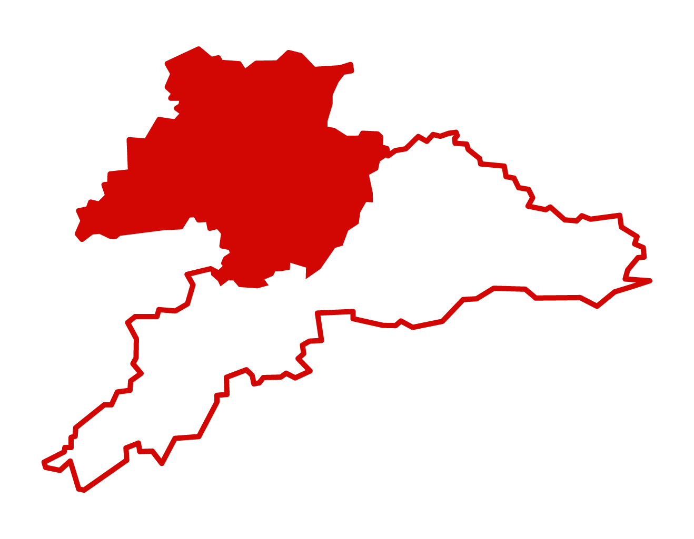
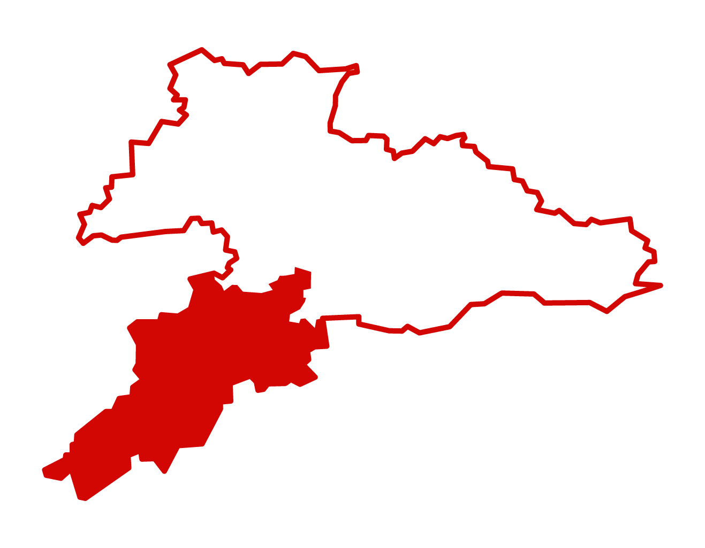

Résultats des votations communales (JU)
Les résultats des votations communales d'avant 2020 seront disponibles prochainement.
Il existe déjà des informations pour les communes de :
- Haute-Sorne (21 juin 2020)
- Develier (05.07.2020)


